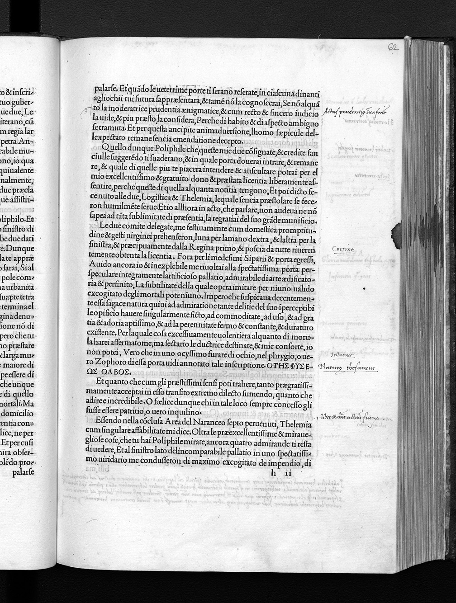
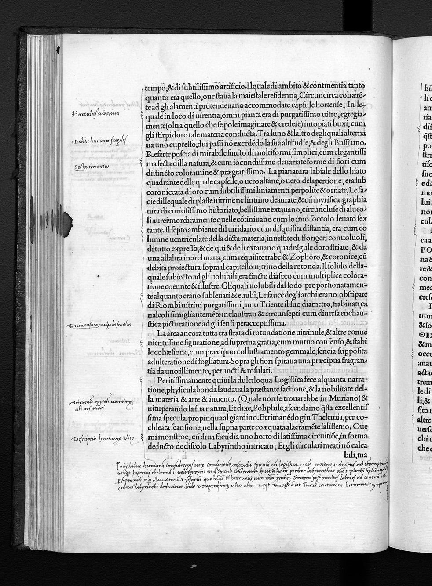

← All Folios
Signature h6v
Folio 62r, Quire h

Biblioteca degli Intronati, Siena — O.III.38
HIGH Unverified

Biblioteca degli Intronati, Siena — O.III.38
HIGH Unverified
Vision Reading (Phase 3 deep analysis)
Primary hand: Multiple · Hands: 3 · Type: woodcut_page · Sig: h2v
Woodcut: Two seated figures at a pedestal with circular medallion
Woodcut of two seated figures (scholars or philosophers?) on either side of a pedestal or desk with a circular medallion/portrait above. Classical architectural frame. Text below. This appears to represent a scene of philosophical instruction or dialogue immediately before the three-doors episode.
Condition: Good
Transcription Attempts
top · Italian/Latin · MEDIUM
La [...] piacidente [...] quaesta [...] Hierogliphy [...] [...] farno [...] mullo [...] Che tendel [...] de [...] le [...] 3 [...] porte [...]
KEY: 'Hierogliphy' (hieroglyphs) + '3 porte' (3 doors). Reader explicitly connecting the hieroglyphic inscriptions to the three-doors episode. This is a structural cross-reference annotation
left_margin · Latin · LOW
pro [...] inviolat [...] [...] amplis [...] Logistica [...]
'Logistica' (logistics/practical reason). Philosophical vocabulary
left_margin_lower · Latin · LOW
[...] qui [...] dormiunt [...] laverant [...]
'dormiunt' (they sleep), 'laverant' (they washed). Sleep and purification — both have alchemical resonance
bottom_left · Latin · LOW
Haenestius [...]
Possibly a proper name
Scholarly Significance
Page 124 — the last page before the three doors. The annotation 'Hierogliphy' + '3 porte' shows a reader explicitly linking the HP's two main symbolic registers: the pseudo-Egyptian hieroglyphic tradition and the allegorical door-choice. This structural cross-reference is evidence of systematic reading across the book's different symbolic systems. The word 'Logistica' (practical reason vs. pure reason) connects to the philosophical tradition of the Choice of Hercules.
Cross-references: Photo 136 (p.123, Herculem), Photo 138 (p.125, three doors)
Vision reading (Claude Code, Phase 3)
Annotations
MARGINAL_NOTE (1)
Marginal Note
“mullum LXXX librarum in mari Rubro captum Licinius Mucianus prodidit, quanti
mercatura eum luxuria suburbanis litoribus inventum?”
a uno lapideo et superbo ponte di tre archi, cum gli capiti alle ripe
sopra gli firmatissimi subici, cum le pille dagli dui fronti carinate, ad continere la structura firmissima,
et cum nobilissime sponde. In le quale nel mediano repando del substituto cuneo del arco, de qui et de
lì, perpolitamente, excitata promineva una porphyritica quadratura fastigiata, continente una
cataglyphia scalptura di hieraglyphi. Nella dextra al nostro transito, vidi una matrona d’uno serpente
instrophiolata (...
Russell, PhD Thesis, p. 177 (Ch. 7)
Marginal Note
“mullum LXXX librarum in mari Rubro captum Licinius Mucianus prodidit, quanti
mercatura eum luxuria suburbanis litoribus inventum?”
a uno lapideo et superbo ponte di tre archi, cum gli capiti alle ripe
sopra gli firmatissimi subici, cum le pille dagli dui fronti carinate, ad continere la structura firmissima,
et cum nobilissime sponde. In le quale nel mediano repando del substituto cuneo del arco, de qui et de
lì, perpolitamente, excitata promineva una porphyritica quadratura fastigiata, continente una
cataglyphia scalptura di hieraglyphi. Nella dextra al nostro transito, vidi una matrona d’uno serpente
instrophiolata (...
Russell, PhD Thesis, p. 177 (Ch. 7)